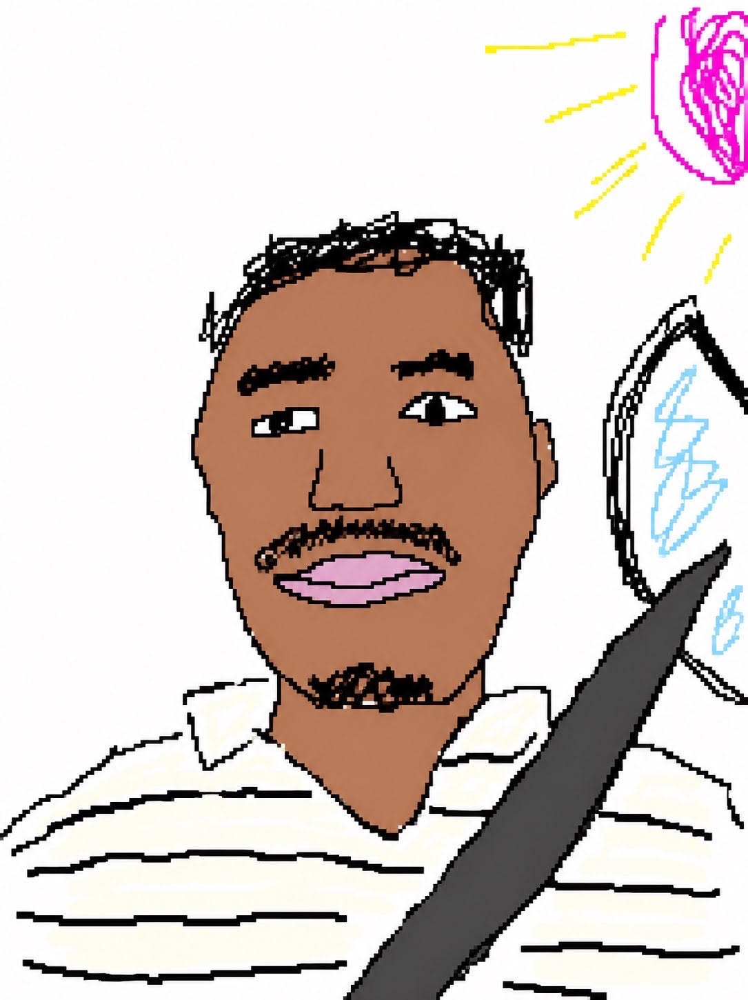

Akornor Blankson
A product design and photographer.
I was born in Accra, Ghana. Used to be a student, still am honestly, since I never really stop learning anything.
The whole way I design comes down to one idea: Fluency Without Learning. If you have to stop and figure out how something works, I haven't done my job yet. Most of what I build is for rural and low-literacy contexts, stuff that should just make sense the first time you touch it.
I also do photography, usually shooting marriage stuff. Different tool, same eye really, just paying attention to what's actually in front of you.
Outside of that, I'm a Knicks fan, I watch a lot of anime, and I've got Nolan and Scorsese fighting for favorite director. I'm pretty introverted, but working on it. You can find me on Instagram and X, or reach me via email.